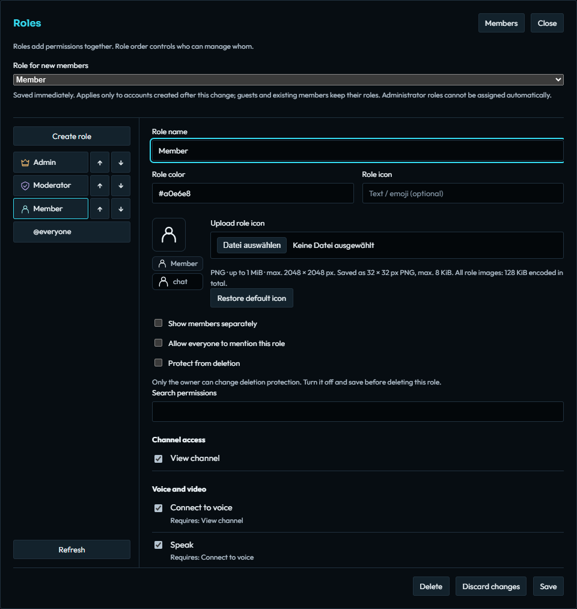

Managing a community · Public alpha
Roles, members, and channel access
Grant useful access, keep administration deliberate, and verify what a regular member can actually do.
Understand the closed starting policy
A fresh installation starts closed. @everyone has no grants, the Member, Moderator, and Administrator roles are unassigned, and no default member role is selected. Existing channels begin with View channel → Deny for @everyone.
Roles add their server permissions together. Role names are labels; naming a role “Moderator” does not give it moderation rights. Role order also matters: delegated managers can manage roles and moderate members only below their permitted hierarchy.
The current server and desktop client use the coordinated roles-v1 authorization model. A new installation needs a fresh database; this release does not automatically migrate a legacy permission database. Follow the server setup guide before configuring members.
Create roles and assign members


- As owner or an appropriately authorized manager, open Permissions → Roles.
- Select a role or choose Create role. Start from a template provides Member and Moderator starting points; review the permissions before saving.
- Use Move role up/down to set the intended hierarchy.
- Open Members, select a registered account, choose the role, and use Add role.
- As owner, optionally set Role for new members. It saves immediately and applies to future registrations, not existing accounts or guests. Administrator cannot be the automatic role.
A permitted member’s context menu also offers Assign roles…. Guests with a saved client identity can receive persistent assignments: adding their first role registers that identity and retains the assignment on reconnect. Ephemeral guests without an identity key cannot retain roles.
Open the channels members need
- Right-click a channel and choose Channel access.
- For a members-only channel, retain the
@everyoneview deny and add a Member override allowing View channel, then the intended chat or voice permissions and their prerequisites. - For a public channel, apply the Public preset and review the resulting
@everyonerules. Other role and member exceptions still apply. - Choose Sync with parent for a child that should inherit its parent’s policy, or Customize this channel for a separate policy.
- Use Preview role changes before saving. Search by name or exact unique ID to inspect combined member roles and individual overrides.
- Save, then use Check access for a regular member and a guest. Also connect with a non-admin account and test viewing, joining, sending, and speaking.
Edit channel also opens Channel access. Save metadata first, or confirm discarding its unsaved edits when moving to access settings. Channel passwords are configured separately from permission rules.

Read the effective decision
Permission resolution starts with server role grants, applies the channel’s @everyone overrides, combines role overrides, then applies member-specific overrides. An Allow wins when combining role overrides at that stage; capability prerequisites and moderation restrictions still apply.
Check access shows the saved effective decision and its source. It does not test unsaved changes, passwords, bans, or resource limits. A successful check is therefore one part of verification, alongside a real ordinary-member connection.
Protect administration and ownership
Only the owner can grant Administrator or transfer ownership. Limit Administrator to trusted operators; use a dedicated Moderator role for routine work.
The owner can enable Protect from deletion on important roles. Administrator roles begin protected. To delete a protected role, the owner must disable protection and save first, then confirm deletion. Deleting a role removes its assignments and channel overrides.
Ownership transfer in Members gives the recipient ownership and removes your owner protection. Check the recipient carefully before confirming a transfer. Role and access changes are audited, and revision checks reject stale edits rather than silently overwriting another manager’s work.